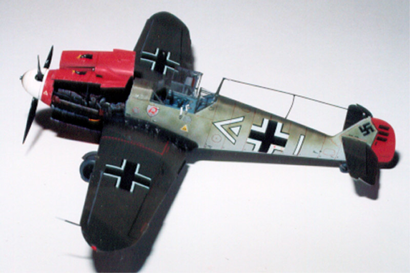
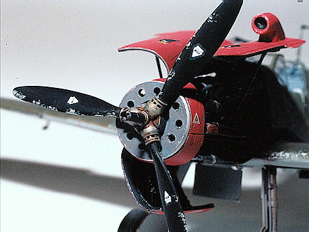
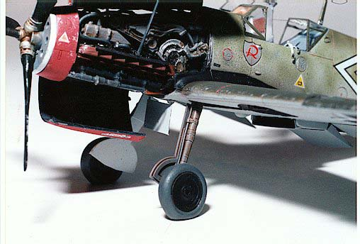
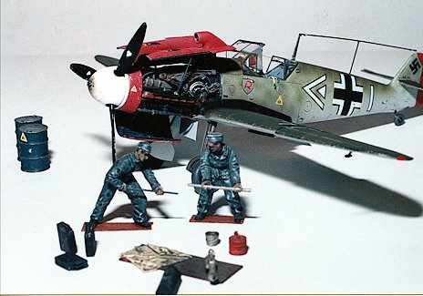
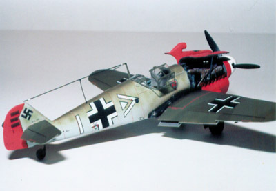
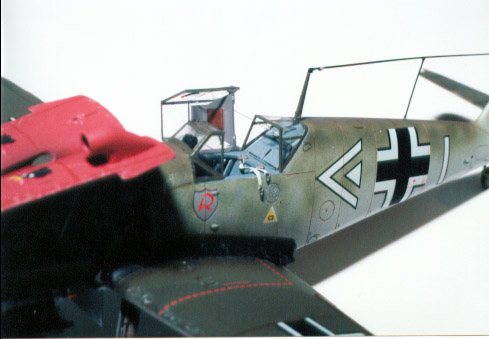
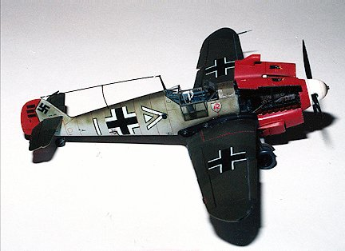
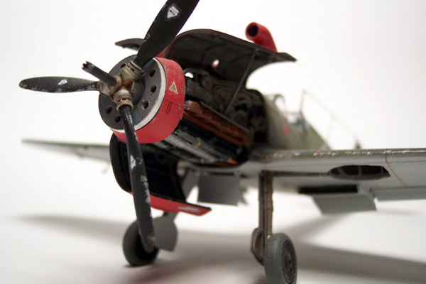
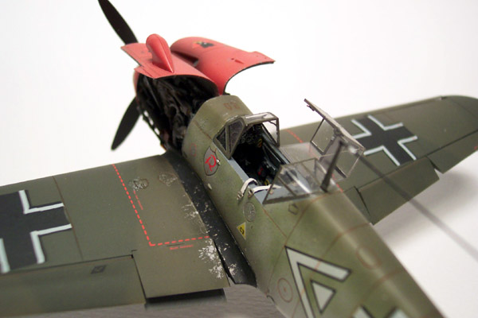
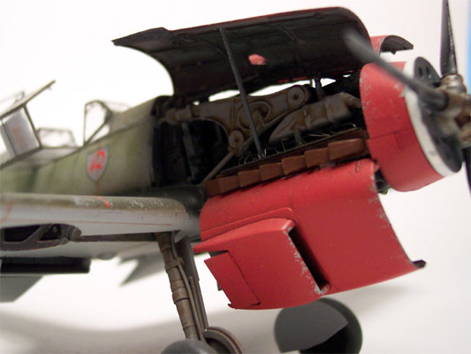

Messerschmitt BF109F-2 Super Detail

Kit #09126
MSRP $17.98
Model, images and text copyright © 2003 by Matt Swan
Willey Messerschitt’s BF109 and all it’s variants has always been fascinating to me and I’ve built several models of them over the years. Produced in 1941, the F model was a stopgap measure to combat the mark III spitfire, as the G models were not ready for production yet. Many German pilots felt that the F model or Franz was the best dog fighter of all the variants. This was also the first variant to use the cantilever elevators and eliminate the elevator support struts. The Franz ‘ top speed exceeded the BF109E by a large margin and it had an excellent climb rate but like all 109’s, in a high speed dive the elevator would lock up and the only way to recover was to frantically adjust the elevator trim wheels – some real pucker factor here, especially if you’re being shot at.
For the basic kit I started with Hasegawa’s BF109F-2 #09126 and Verlinden kit #1302, which is a detail kit for a 109G-2. The only modifications required for the F-2 is to remove several small scoops from the hood and nose cowling, which was accomplished with my trusty Dremel (best Christmas gift I ever got!). These areas were touched up with 200 grit emery clothe from my local auto parts store and then some 400 grit to polish. This works very well and gives a good finish when complete.

I started by examining the directions and pieces for both kits for several hours to develop a construction plan. I made notes on the kit directions to avoid forgetting details later on. The entire nose section needed to be removed from the fuselage and the gun cover has to be removed from in front of the canopy. The Verlinden instructions recommend leaving the Hasegawa gun cover in place if the hood is not going to be completely removed but it seemed that a gap would be created at the gun deck so I modified the parts somewhat and used the Verlinden pieces. The rear section of the gun deck needed to be cut down about 2mm and the inside of the gun cover has a ridge that must be removed from the rear section only. Several dry fits are needed to get this right. Once the fuselage halves were glued together with Tenax 7R the resin pieces fit in very nicely. The access panel under the wing had to be removed also. I have a welders tip cleaning drill that I picked up at the local welding supply shop for about $3.00 and it includes several bits in the handle, an invaluable tool. I used my welding tip drill to start a hole in the panel then carefully opened it up with the Xacto knife After the major pieces were removed with the Dremel, I cleaned everything up with diamond needle files.
After an intensive study of Edward Shacklady’s book Messerschmitt BF109 I decided to leave the ailerons and rudder alone but to drop the elevators. Pictures of 109’s in the field show the elevator either raised or dropped while at rest and it seemed to be pretty evenly split. The Hasegawa elevators are of excellent quality and show the wood and fabric structure as well as the Verlinden but the kit trim tabs were better defined. Using a fresh Xacto knife to score both sides of the elevator joint allowed me to drop them with some firm pressure without completely removing them. A little Tenax 7R locked them in place.

All radiators had to be opened up, the front scoops on the wing radiators were removed and the rear flap on the cowl radiator was removed. This was done with an Xacto knife. Care must be taken on the wing openings to not damage the areas that will remain. It’s a tight fit. The brass parts from the Verlinden kit replaced these. The Verlinden kit is an excellent kit with high-grade resin parts. I found only two air holes out of forty some odd pieces and they were in concealed areas. The brass was also excellent and can be trimmed with a razor knife. The DB601 engine built up according to specs with the addition of some wire from an old computer joystick cable for spark plug wires. These must be installed prior to the exhaust stacks going on. The engine firewall and gun deck were prepainted with Testors 1163 flat gray and installed in the fuselage. The rear sections of the MG131 guns are installed and then the gun cover can be glued in place. This entire area gets a black wash to create the effect of accumulated engine oil and spent gunpowder. I find that adding a little Future floor wax to the wash helps out a lot.
Next came the cockpit tub. The Verlinden trim wheels sit too close together so a shim must be placed in-between them or it will blend into one wheel. The chains running from the trim wheel were a big disappointment as most of them were missing so I replaced them with fine steel wire, didn’t matter because you can’t see them when complete anyway. Verlinden provides two options for the 20mm cannon, with or without the cover. I elected to build with the cover off since the aircraft would be displayed as being serviced.

The wheel wells have to be opened up as the kit comes with round openings and the F-2 had sharp corners on the outside edges. The brass inlays from Verlinden were too tall to fit properly in the wheel wells and took extensive trimming to fit right. I cut them down with flush cutters then trimmed the rough areas with my Xacto knife. Even after that, putty was needed to finish it off. This was probably the most difficult piece of conversion work. The front area of the wing had to be thinned around the access panel prior to attaching the brass framework. The Verlinden radiators were installed after all interior areas of the wing were done in the Testors flat gray and then the tops were attached. All plastics were assembled with Tenax 7R.
The overall cockpit was painted with Testors 1163 and I picked out details with black, yellow and red enamels. A black wash was dropped into the instrument faces. Everything was dry brushed with steel to highlight the wear areas. The side panels were dry brushed with flat white over the steel. The dash was painted with Gunze Sangyo dark gray and dry brushed with white, yellow and red. I used the kit gun site in favor of the Verlinden site – it just looked better to me. Once the tub was installed in the fuselage I attached the completed wing assemble. The upper seat belts were not installed until the very end; I like the way they are casually draped over the cockpit wall.
I think it’s important to note that I did not need to use any putty at any plastic-to-plastic joint. The Hasegawa parts mate up really well. Some putty was needed at the joint between the gun cover and the canopy. After cleaning up the glue joints and wiping the kit down with a micro sheen cloth, I don’t like to wash with soap whenever possible, painting began. The micro sheen cloth will remove any oils and dust. It will even clean out most panel lines with a single wipe. It’s also great for  when you get that big greasy fingerprint on your paint job. The rudder, upper and lower hoods and front cowling were sprayed with Gunze Sangyo RLM 23 red using a Badger 150 airbrush and an IL medium tip. The rudder was masked off after drying. The underside was painted with Gunze Sangyo RLM 76 light blue, the wheel wells with RLM 75 gray and the lightening holes with Testors flat black. The kit wheels were replaced with True Details #48006 and 1mm fuse wire was applied to simulate brake lines running down the front side of the gear struts. I used some foil from a wine bottle to make the tie down straps on the brake lines. The thin strips of foil were attached with a small spot of CA then wrapped around the strut and tacked again with CA. I like to use old dental picks for this kind of work because it gives me excellent reach into some really tight places and I can deposit the minimum amount of glue needed to do the job. Next time you’re at the dentist ask if he has any old picks, most do and are willing to give them away.
I masked off the cockpit and firewall area with Stick-To-It from Darice. This is normally used to hang posters on the wall but is great to work with for masking. Simply roll it out and apply it for the camouflage pattern and cover the interior area with masking tape. Once it’s removed you have a finely feathered edge. The entire fuselage was sprayed with RLM 76 light blue. RLM 82 light green was used to create the molted pattern on the fuselage then over sprayed with RLM 81 brown violet on the top most surfaces only. RLM 81 was applied to the wing surface. After this dried for a few hours I laid on the Stick-To-It and masking tape then sprayed RLM 83 dark green to finish the splinter pattern. Make sure to spray from directly overhead to prevent a paint ridgeline from forming. Flat black was applied at the wing root; this was a fairly common application on earlier 109’s to hide the exhaust pattern.

Now we’re going to have some fun, it’s time to attach the engine and there is no structural guideline to mount it correctly. First dry fit the upper mounts to the firewall and visually check the alignment: left, right, up, down, do it twice. File off small amounts from the engine mounting until the alignment appears good. It took two or three adjustments with the Dremel using a small burr bit to the backside of the engine to get everything to seat properly. You will be able to adjust the up/down alignment slightly when the lower engine struts are put in. Do that next. I found that the front cowling was forward about 2mm so that the hood would not mount correctly and I had to remove the front radiator tank and sand it down to get the fit right. Once this has been accomplished I connected the final radiator lines from the lower rear engine into the wing root and added the MG131 gun barrels. The spinner plate, prop blades and 20mm cannon barrel are assembled, painted and mounted to the front of the cowling. I applied a little brown wash to the pitch controls in the propeller hub; you don’t want to get any of the wash on the spinner back plate. I drilled out the spinner cover so that the cannon barrel would hold it snuggly but could still be removed. Don’t forget to drill out the cannon barrel. The Hasegawa propeller blades had to be shortened about ¼ inch to achieve the proper length when complete. Take care that each blade is at the same pitch as the alignment studs get cut off in the shortening process. At this point I installed the lower engine cover with some CA+.

After allowing 24 hours for everything to dry down the entire model was coated with Testors gloss coat and allowed to dry again. The kit decals are pretty good but I had to add several stencils from Third group sheet #48-005. The squadron badge and prop emblems came from this sheet. This is the only manufacture I have found that includes the prop markings. Two different markings were occasionally used, an inverted triangle or a logo that looked very similar to the Hamilton Standard logo found on American aircraft. The kill markings for the rudder were printed in the same red as the paint job so I had to cut down a different decal from the kit sheet that was done in black. Great care must be exercised with the Hasegawa decals when using setting solution. I just about freaked when I applied Micro Sol and the decal edges started to curl up. This seemed to happen on the larger decals only. After another day of drying time I used a brown Micron C1 pen to highlight the panel lines, Micron 001 black pen for ailerons and rudder demarcation and silver paint on a chopped brush for paint chips. Tamiya smoke X-19 was used for gun and stack exhaust. I changed tips on the airbrush to an extra fine for the smoke markings and when doing the light green molting on the fuselage. I applied a Vandyke brown wash on the landing gear struts and doors. Once more to the paint booth for a coat of Testors dull coat lacquer and on to the canopy. I like to do my own masking vs. using precut masks even if it is tedious. First a coat of Testors flat gray was applied to give interior color and then RLM 81 brown violet was applied. Every picture of a 109 cockpit that I’ve seen clearly shows support struts in the upper corners of the front windscreen. I was surprised to find that Verlinden did not catch this item but it didn’t take long to remedy with some odd bits of brass.
The canopy was attached with Testors clear parts cement. The canopy retaining spring was made from some of that joystick wire wrapped around a needle to create the spring look. Invisible thread was used for the antennae and painted over. A little CA was used for the insulators and the top engine hoods with support rods are attached. The support rods were cut from some scrap resin rod.
There’s about 80 hours of work but we’re not done yet, Verlinden’s WW2 German gun maintenance crew, some jerry cans and drums are added for effect. This was a great project but not for the faint of heart. I’ve still got to built a base and cover for display but that’s another project.

Materials:
Hasegawa kit #09126 BF109F-2
Verlinden kit #1302 ME109G-2 Tropical super update
Verlinden kit #1367 Ground Crew; gun cleaning
True Details kit #48006 BF109 wheels
Third Group Decal Sheet #48-005 Bf 109E-1/3/4 111/JG2/52/54/77
Darice Stick-To-It
Testors 1149 flat black
“ 1163 flat gray
“ 1168 flat white
“ 1169 flat yellow
“ 1150 flat red
“ 1151 beret green
“ 1146 silver
“ 1160 dull coat lacquer
“ clear parts cement
“ Contour Putty
Tamiya X-19 smoke
Gunze Sangyo RLM 23 red
“ RLM 66 black gray
“ RLM 75 gray
“ RLM 76 light blue

“ RLM 81 brown violet
“ RLM 82 light green
“ RLM 83 dark green
“ Burnt iron
Grumbacher lamp black
Grumbacher Vandyke brown
Tenax 7R
Model Master 2736 clear topcoat
Model Master 1780 steel
Micro Scale Micro Set
Micro Scale Micro Sol
Zap CA+
Zap accelerator
References:
Messerschmitt BF109 by Edward Shacklady
Cockpit by Donald Nijboer and Dan Patterson
Aviation History Sept. 2001
Fighters-Best of Flight Journal Summer 2001
Luftwaffe Fighter Modeling by Geoff Coughlin
The Battle of Britain by Richard T. Brooks
